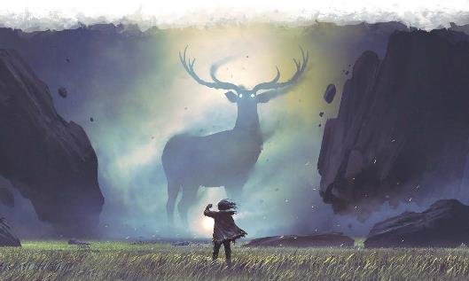

拉曼尼亚体现了原始的大自然，未经染指，狂野不羁。它常常被叫做暮光森林，被描述为一片参天古树和庞然巨兽的国度。然而，森林仅是拉曼尼亚的一个侧面。每种自然环境都在不同位层中有着特征典型且夸张的反映。狂风肆虐的沙漠、波涛汹涌的汪洋、一望无际的原野都能在这里寻到，在其他位面，这些环境是正在进行的故事的背景。而在拉曼尼亚，这些环境便是故事本身。它们无需妖精或邪魔来塑造自己的核心，因为土地本身便是其核心。
一些学者断言，拉曼尼亚是物质位面的蓝图，始祖巨龙们在这里完善了风暴和磐石的概念。它们认为，自然界中充满了拉曼尼亚的神髓，德鲁伊和其他原力魔法使用者实际上是在操纵拉曼尼亚的精华。事实上，前往暮光森林的德鲁伊会被静默在这里灌注的纯粹自然之力当中。
拉曼尼亚和世界紧密相连，是最容易抵达的位面之一。它的宝藏是充满元素之力的自然产物——木材、岩石、草药和植物，所有这一切都比它们凡间的同类更强壮和有力。但当你来到拉曼尼亚时，这里同样有着许多掠食者，而你是它们的猎物之一——一切试图从自然化身之中掠取之人都会遭到它们的追捕。
拉曼尼亚是自然世界被强化和夸大的映射。这里的空气纯净甘冽，水清澈无浊。这儿的色彩鲜艳到令人难以置信。它充满了生命——在这个国度内，每一块石头都可以成为土元素，任何树木都可以是启蒙树木。植物几乎总在绽放鲜花，动物几乎总处于健康的壮年。除了少数位层如腐沼之外，拉曼尼亚反应了自然世界的理想状态。以下是这个位面的一些一致特性：
德鲁伊法术延时Extended Druidic Magic。当一个生物施展一个持续时间1分钟以上德鲁伊法术时，法术的持续时间会翻倍。法师持续时间在24小时以上的法术不会受到影响。DM可以选择将该效应扩展到其他驱使原力魔法的角色身上，比如一位护门者游侠或者一位绿吟者诗人。
不屈兽群Indomitable Beast。野兽和元素生物具有+2额外体质，并且在感知、智力、魅力豁免中获得优势。在抵达拉曼尼亚之后被魅惑或誓缚的任何野兽或元素都会立即从效应中解放，这对被卷入该位面的元素飞艇来说是灾难性的结局。
元素之力Elemental Power。当一个生物施展召唤或召来元素生物的法术时，会视作使用了比原本高一环的法术位。
丰饶土地The Land Provides。生物在寻找食物或庇护所的感知（生存）检定具有优势。在拉曼尼亚的大部分地区都有丰富的植被，土地充满生机。（在破碎之地上觅食非常困难，但你至少会有检定的优势！）
原初品质Primordial Matter。拉曼尼亚的物质很难破坏或污染。所有非魔法的食物或饮料都经过了净化，不含毒素和疾病。此外，木材和石头等天然材料比通常更坚硬。当试图摧毁由拉曼尼亚的材料制成的物品时，将《地下城主指南》第八章中建议的护甲等级提高3级，并将物件的生命值翻倍。
标准时间Standard Time。费尼亚的时间流逝和物质位面的相同，并且在其各个位层中也是一致的。
一个广为人知的故事中，讲述了一位探险家穿过一处显能区域时，发现自己正在一座巨大的山峰上。在向山峰上爬去时，她正要探索一片神秘的灌木丛，突然间，如狼般大小的老鼠们袭击了她。她和老鼠搏斗，但几乎要被击倒…直到一只巨大的喙突然出现，一口就咬住了一头巨鼠。这片宽阔的“灌木丛”并非天然的荆棘，而是一只巨大鹏鸟的巢穴，它则是拉曼尼亚众多令人印象深刻的居民之一。
拉曼尼亚的原住民是野兽——既有那些你会在艾伯伦的荒野中遇到的，也有可以视作其种类完美代表的庞然巨兽：熊或狼的理想化身。所有自然生物都可以在拉曼尼亚找到。事实上，一些贤者断言，一种生物在拉曼尼亚存在，便能证明它是源自“自然”。
大部分情况下，拉曼尼亚的野兽并不比它们在艾伯伦的同类更聪明。然而，一些动物具有类似受到了启蒙术效应的智力，但即便是它们也通常遵循着自己的自然本能，过着狂野的生活。虽然萨恩的巨猫头鹰可能开店并竞选市议会的议员，但拉曼尼亚的巨猫头鹰则满足于猎杀暮光森林中的野兽。因此，在拉曼尼亚狂野找到会说通用语或原初语的生物，但其中大多数都对长时间的侃侃而谈不感兴趣。
拉曼尼亚的野兽通常归为以下四种。
凡兽与它们在艾伯伦的动物同类完全相同，任何自然生物都狂野在这里对应适当环境的位层中找到。如果这些野兽是冒险者们在访问拉曼尼亚时最初遇到的生物，他们甚至可能不会意识到自己已经来到了另一个位面。
凶暴动物是体型巨大的生物。这些生物在这儿比寻常动物更常见，在暮光森林之中，巨大多数猫头鹰都是巨猫头鹰，而它们的猎物也是巨鼬和巨鼠。《怪物图鉴》中有一些“凶暴”或“巨大”生物的范例，但任何一种自然动物都可能在拉曼尼亚存在对应的凶暴动物。
巨兽是巨大的动物。鹏鸟便是拉曼尼亚的巨兽的一个范例。在艾伯伦发现的那些是通过显能区域来到了这个位面，或在相接期从拉曼尼亚来到了艾伯伦。DM可以创造出更宽泛的巨兽类型：冒险者们可能会被一群巨狼追捕，或者他们也可能会遇到一条使用紫虫数据的巨蛇，甚至一只巨大的恐龙！虽然这些生物形态上和野兽类似，但它们通常被归类为怪兽。由于他们庞大的体型和与位面的联系，他们免疫大多数针对野兽的效应，你没办法用化兽为友法术来魅惑一头鹏鸟。
图腾是超越战术尺度的庞然巨兽——得用里为单位才能丈量他们的大小。侏儒探险家塔斯克曾讲述过一个故事：无尽汪洋上一个岛屿本是一只巨大的海龟；他的另一个故事讲述了一群生活在一只流浪的巨狼毛皮上的狼人。这些图腾并非自然生物，也无需进食。它们的起源和目的的未解之谜，但大多数贤者认为它们是位面本身投影出来的不朽精魂。一些人声称图腾和它们形象中的一切生物息息相关，而另一些人认为图腾乃是原初伟力的源泉，野蛮人、化兽者和德鲁伊能够从它们那里得到力量和指引。唯一可以肯定的是，它们免疫寻常的法术，并且没有任何人成功伤害到过一位图腾或者和它们进行了交流。
除野兽之外，这个位面最常见的生物便是元素了。不像巨灵、魔蝠和其他在费尼亚和西拉尼亚的拟人化元素生物，拉曼尼亚的元素生物是这些元素中最纯粹的的生命本质，不受任何拟人化的欲望影响。这些元素包括最标准的土元素、火元素、气元素和水元素，但它们可以有各种尺寸和形态。探索破碎之地的冒险者可以遇到在地面上爬行的小小熔岩团块，而无尽汪洋中的利维坦和原初风暴中的古岚则是浩劫般的雄伟力量。
吉拉哥侏儒们通常会召唤和束缚来自拉曼尼亚的元素，使用它们驱动闪电列车和飞艇。尽管它们具有智力，但这些元素是全然的异界来客。它们没有时间的观念，纯粹通过元素的平衡来感知世界。大多数元素唯一的愿望便是展现它们自己的元素：通过燃烧、流淌和飞翔。许多元素对其他元素种类的精魂持敌对态度，这造成了它们在破碎之地的致命冲突——这对和它们打交道构成了障碍，因为它们倾向于将类人生物视作一团水。虽然一个会将原初语的生物能和拉曼尼亚元素交谈，但通常很难建立任何共同的谈判基础。不管怎么说，仍然流传着流浪的德鲁伊“和大地与空气做朋友”的传说，所以一切皆有可能！
就像雷霆海中的卡拉默人鱼，艾伯伦上有人鱼存在，但他们的祖先源自拉曼尼亚的无尽汪洋，现在也在那里存在。这些原始的人鱼们仍然贴近它们的始源和本能，他们使用德鲁伊魔法，但不制造工具或建筑。拉曼尼亚的其他类人生物住民也差不多。任何天生有着强大的原初联系的种族都可能和拉曼尼亚有关，但会受到本能的驱使，避开被文明的桎梏所困。暮光森林中的枝头可能居住着斑猫人，但如果真的如此，它们看上去也非常狂野不羁。
在一个世纪以前，银焰大清洗期间，许多兽化人逃到了拉曼尼亚。只要他们还留在这个位面，兽化人就无法将诅咒传播给除了自己后代之外的任何人，诅咒的超自然冲动——捕食无辜者的冲动，以及可能导致手滑这受害者失去控制的嗜血欲望——都会被停滞。与此同时，原始的本能被放大了。拉曼尼亚的兽化人仍然是捕食者，他们从狩猎中获得快乐，但他们不会被驱使去犯下恶行，并随时保持着自身的控制。兽化人的族群和社区分布在各个位层之间，大多是为了逃离银焰圣堂武士和导致大清洗的黑暗力量的腐化。这些变形者拥抱了他们的原始本性，很少呈现出人形。但也有一些来自受到兽化症感染的银焰教徒的后代，他们选择了流亡而非死去，在拉曼尼亚努力维持着祖先的信仰和传统。
少数德鲁伊和游侠来到了拉曼尼亚，并选择留在这个原始的天堂。许多人和兽化人们一同奔驰，拥抱自己原始的本性，终日处于荒野形态之下。其他人则作为牧位者，试图将危险的显能区域影响降到最低，并对误入其中的粗心旅行者伸出援手。
拉曼尼亚没有邪魔或天界生物。但探险家们常常会报告说感到自己被监视，有时候，一些随机的事情似乎冥冥之中有看不见的手在引导。当外来者试图在拉曼尼亚建立工业时，他们会遭到巨兽和上古元素的袭击，或者被尤为恶劣的天气变化所挫败。这可能是图腾们的杰作，它们对自己所在的位层有深远的影响。又或者，在此之上的伟力监视着整个位面。一些学者断言，欧菈卢恩之月是统治整个位面的意识，而甚至早于森林守望者的实践的埃鲁登化兽者传统也反映了这一点。化兽者德鲁伊们暗示，欧菈卢恩创造了化兽者，而最初的兽化人便是她的冠军勇士。

拉曼尼亚的每一层都突出了原始自然界的一个特定方面。拉曼尼亚的一层中可能只有一座巨大的山峰，而另一方面，暮光森林可能和整个科瓦雷（甚至艾伯伦本身）一般大。一层的边缘可能是一个无法逾越的物理屏障，或者它会自行卷曲，如果你在无尽汪洋中航行足够远，你会发现自己又回到了起点。拉曼尼亚的大多数位层都遵循传统的昼夜循环，尽管在位层和位层之间并不同步，当天空中能看到欧菈卢恩之月时，它总是处于满月状态。
连接拉曼尼亚各位层的门户通常只允许单向通行。任何一个深水池都可能连接到无尽汪洋，但虽然你能从暮光森林的池中潜到无尽汪洋里，另一边却没有返回森林的大门。无尽汪洋中有许多小刀，如果你探索其中之一，你可能就会发现自己来到了一个新的位层。
在创造位层时，考虑一个独特的自然特征——峡谷、沙漠、孤山，并围绕它们创造位层。那里会出现什么样的生物？有外来者居住在那儿吗？元素是否在那里扮演着不同寻常的角色？它和其他位层会艾伯伦如何相连？
天空被这片广袤雨林的茂密树冠所遮蔽，让这里的地面陷入无尽的暮色之中。这些树的高度超过百尺，尽管没有埃鲁登原野的齐云森林中高耸入云的巨松那么高，但显然也会令人印象深刻。但当人们进一步探索暮光森林时，他们会发现木头形成的奇怪的山脊和墙壁，有些形成了扭曲的树之峡谷。沿着它们，冒险者发现了它们其实是大到难以想象的巨树的根须，这些巨树比萨恩的高楼都更粗、更高大。正如人们在树的阴影之下，暮光森林坐落在远远高于它自身的更加宏伟的树冠的阴影下，而这些巨树是巨兽和更强的生物的家园。
尽管暮光森林是桀骜不驯的蛮荒之地，但探险者们可以在低层森林中找到宽阔的路径。生存专家们可能会意识到，这些足迹并非类人生物踏出，而是图腾的路径，它们行径时巨大的脚步粉碎了脚下的森林。林中充满了野兽——低层森林中有凡兽和凶暴动物，而上方的巨大树冠中有巨兽以及偶尔出现的图腾。低层森林中有许多兽化人族群。一个鼠人部族会在巨树的根须间挖出巢穴，而一群野蛮的野猪人则和流亡圣堂武士的狼人后裔们争执不休。一位大部分的时候都化作猫头鹰的远古精灵德鲁伊哈拉克尽力维持着这里的秩序；在这方面，她得到了一只被她称作“鲁阿克”的巨大猫头鹰的帮助。
破碎之地是一片充满高山和熔岩平原的火山区域。这个位层火山爆发不断，也是许多不断冲突重塑环境的火元素和土元素的家园。火山爆发时，火元素和流淌的熔岩共舞；而土元素则努力抑制火山喷发，重建破碎的群山，结果却让它们再度爆发。很少有野兽能在这一层繁衍生息，但一些坚韧的恐龙已经在这里扎下根来。尽管这个区域和艾伯伦的联系比暮光森林要少，但也可能在这儿找到其他旅行者的遗迹：对于受困的冒险者或想从这里寻到失落遗迹的人们来说，这是一片严酷而致命的风景。
这一层反映了深洋的宏伟壮丽。它是种类繁多的鱼类和海洋兽类的家园，还有人鱼部族和各种水元素，从简单的有知觉的洋流和水诡到巨大的利维坦巨兽。在无尽汪洋之中，侏儒塔斯克遇到了一个实际上是图腾巨龟的岛屿。这里真正的岛屿很小，大多是通往拉曼尼亚其他位层的通道。无尽汪洋中有许多地方和物质位面中的显能区域（大多位于海洋深处）相连。
这是一个满是平原和矮丘的位层，长期受到飓风和永世不休的风暴的侵袭。野兽们蜷缩在洞穴和捉襟见肘的庇护所中，而各种元素在风暴肆虐的平原上激战。一头巨大的古岚驱动着风暴的中心，在索隆娜分裂期间，欧伦·卡伦的一个末日邪教试图将这个元素带到艾伯伦，相信它会将整个世界都毁灭殆尽。
腐坏是自然的一部分，而这正是一个充满了倒下的腐烂落木，反映了如沼泽般腐烂的较小位层。巨兽的尸体散落在这个位层中，巨大的昆虫和其他食腐动物啃食着它们的遗骸。有一个鼠人社区在腐沼繁衍生息，这里也可能有一个凛冬之子于此求道的哨站。尽管腐沼是死亡和腐坏的象征，但它属于纯粹的自然，不死生物在这里并不存在。死灵法师可能会来到这里，希望能唤起那些巨大的尸骸，然而，这会违背位面的主题，如果拉曼尼亚确有更高的伟力在作用，它肯定会集结力量与之对抗。虽然大部分拉曼尼亚的位层都没有疾病，但疾病本身也是自然的一部分，和腐沼相连的显能区域可能会将瘟疫传播到周围的地区。
泰坦的愚行Titan’s Folly
拉曼尼亚蕴藏着珍贵的自然资源，而一个先进的文明会试图采集它们毫不奇怪。在巨人的时代，十一人会在拉曼尼亚的一层建立了一处研究站和开采营地。在和巨兽与恶劣气候作了十年斗争后，这个哨站终于不堪重负，遭到了废弃。由于巨人神秘的奥法建筑学，这座建筑被留存下来…而它也可能是因为另一个原因，因为废墟本身已经成为自然在文明尸骸上复兴的象征而留存下来。蔓藤和苔藓覆盖着破碎的墙壁，巨人的骨骸散落在哨站的遗址中。在泰坦的愚行中，可能藏有价值连城、力量强大的宝藏，但探寻者们必须和好战的元素生物、危险的野兽以及早已死去的巨人们留下的陷阱做斗争。
位面显能现象Planar Manifestations
一个小镇建立在荒凉的刀锋沙漠之中，却它却在一个能提供淡水和似乎取之不竭的渔获的小湖边蓬勃发展。在埃鲁登原野的一个小村子里，人们与一种别处闻所未闻的巨型兔子和谐共处。一个化兽者部族居住在三棵拉曼尼亚显能区域生长的巨树枝条上。这些都是拉曼尼亚如何影响物质位面的范例，而以下则有更详细的描述。
显能区域Manifest Zones
拉曼尼亚的显能区域相对常见，通常会具有一个或更多位面的共通特性。它们通常位于一个区域的中心：在水下可以发现与无尽汪洋相连的显能区域，而在齐云森林、国王森林和其他高耸的林地中可以发现有和暮光森林相连的显能区域。这些通常是常见的通往拉曼尼亚的通路。相对的，生物如敌对的元素到致命的巨兽也可以被显能区域拉到物质位面。
吉拉哥有许多具有元素力量的宝贵显能区，而卡尼斯家族和十二学会也渴望找到更多这样的区域。但它们同样也很危险，因为元素有时会在这些地方自发出现，逗留几个小时，然后消散。被束缚的元素也会在一些拉曼尼亚显能区内脱离束缚，而尤其不幸的是，当这些元素正好在负责维持飞艇飞行的时候！
靠近拉曼尼亚显能区域的动植物会变得更大，也更健康。许多瓦塔利斯家族的飞地都建立在这样的区域。由于纯净的食物和水源，还有极其耐用的木材和其他工业材料，具有原初材质特性的区域也会是聚居地的宝贵资源，恐惧要塞监狱就建立在这样一个显能区域上。
然而，尽管拉曼尼亚显能区域对社区和龙纹家族来说是不错的工具，一些显能区域却会表现得抵抗和反逆文明。天气、植被和快速的腐坏会迅速摧毁这里的建筑，并让植被覆盖留下的废墟。
相接和远离Coterminous and Remote
当拉曼尼亚相接时，拉曼尼亚显能区域会被增强。在未被破坏的自然区域，如埃鲁登原野和夸巴拉的荒野中，植物和动物的繁殖能力都得到了增强，在此期间生育的队伍都往往超乎寻常地健康和强壮。以野兽或元素为目标的法术时间会被延长，如果一个法术的持续时间为一分钟或更长，则其持续时间加倍，持续时间为24小时或更长的法术不受影响。
当拉玛尼亚远离时，动物生育率会下降，在这一时期出生的兽类会体弱多病。动物通常会不安，影响动物和植物的法术持续时间会减半，最短为一轮。
拉曼尼亚通常会在夏至日前后相接，持续一周，而冬至期间远离一周。
拉曼尼亚神器Lamannia Artifacts
拉曼尼亚的植物受到炼金术士们的珍重。来自拉曼尼亚的植叶和根须可以生产出强效的药剂，而许多类型的拉曼尼亚植物都天生具有魔法效果。在暮光森林中，一些灌木可以自然地结出神莓。同样，拉曼尼亚的木材也可能具有不同寻常的特性，就像艾伦诺的青铜木和致木那样。拉曼尼亚的木头和石头可以作为原力魔法的强大法器，用来创造出异能塑像或用于召唤或束缚元素的工具。
拉曼尼亚故事Lamannia Stories
拉曼尼亚桀骜不驯，是元素和凶暴动物的来源，它增强了原力魔法，并为化兽者提供了一个避风港。它还会抵抗文明的入侵。以下是一些将拉曼尼亚融入你的故事中的点子。
蛮荒大地A Savage Land。当一队冒险者在不知情的情况下穿过了通往拉曼尼亚的通道，他们必须在这片蛮荒的国度中挣扎求生。也许他们不需要花费多少工夫就能找到另一个显能区域带他们回家，也许他们需要在拉曼尼亚生存数月，以等待位面和艾伯伦相接。或者他们的飞艇进入了显能区域，而元素们挣脱了束缚，冒险者们和幸存者一起被困在了这个位面。
巨兽岛Megafauna Island。一座靠近拉曼尼亚显能区域的岛屿上被发现是一系列不同寻常的巨兽的家园。冒险者们可能会自己偶然发现它，也可能被一位瓦塔利斯家族成员雇佣——后者希望在不引起竞争对手注意的情况下调查这一传言。也许冒险者们发现了一只传说中的巨猿，如果被捕获，它可能会在被展出时挣脱束缚，攀上萨恩的塔楼。
迎战自然At War with Nature。一位灰烬誓约德鲁伊计划在一座大城市中创造一个拉曼尼亚显能区域，比如费尔海文或萨恩。这会让城市化作废墟，释放出元素生物和高密度的植被，令荒野取而代之。冒险者们能否找到办法去除这个显能区域？